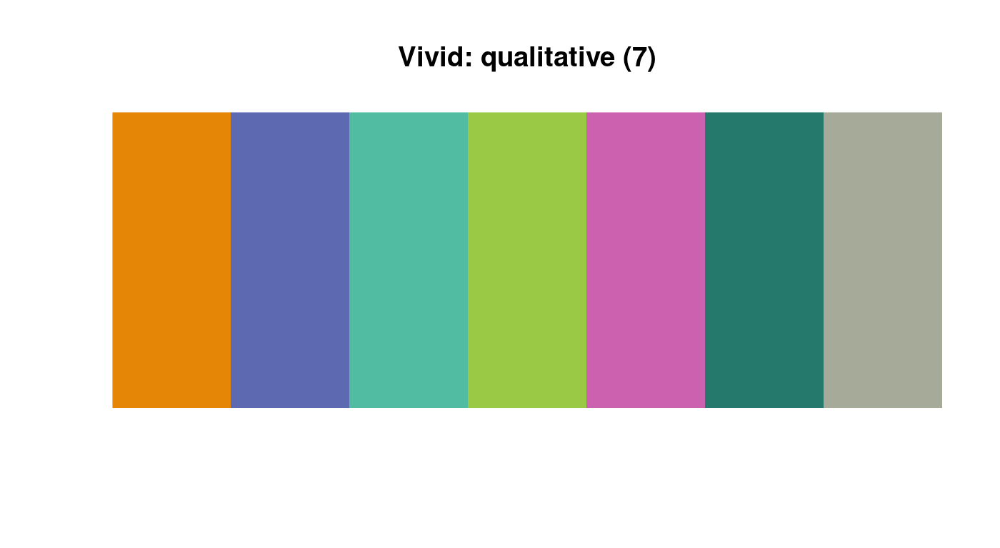
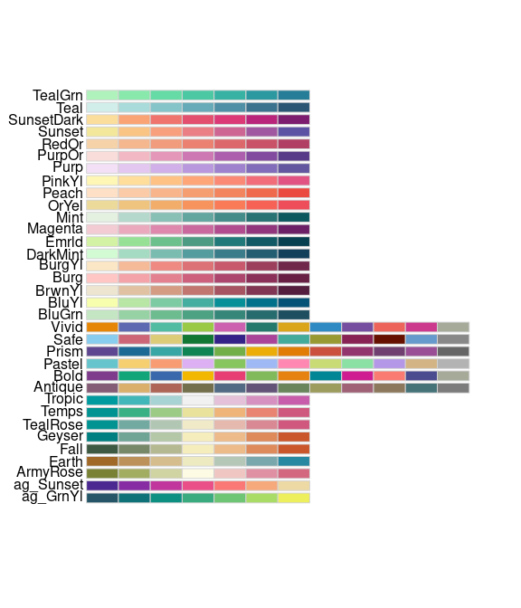
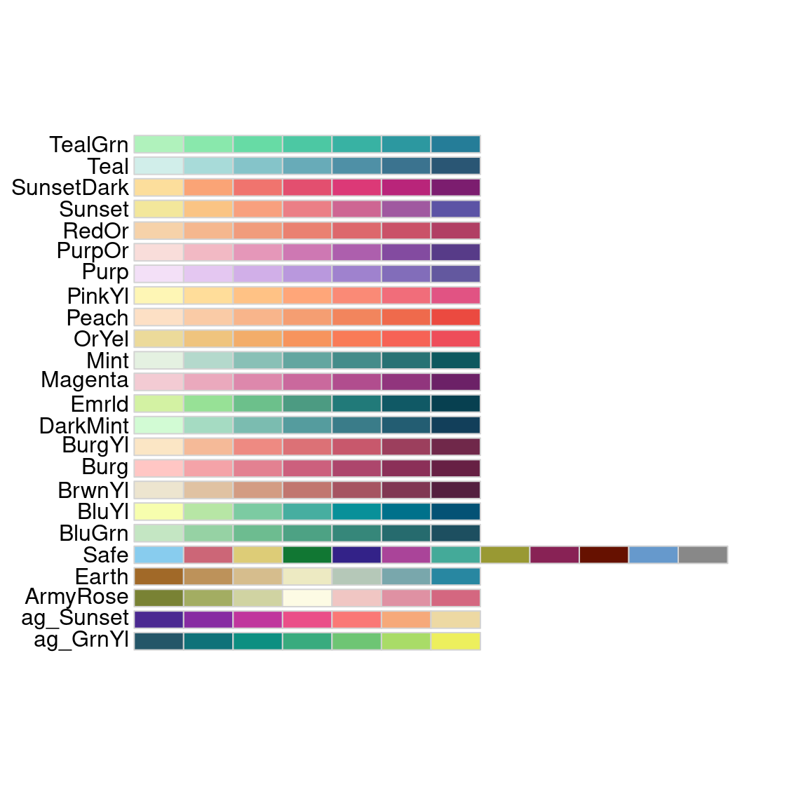
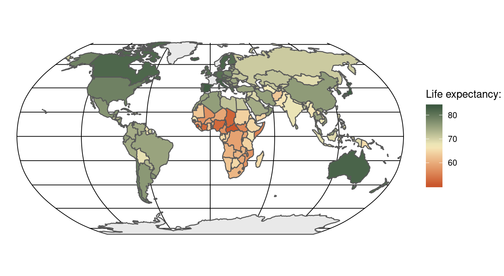
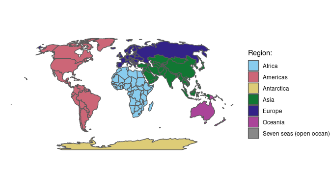

The goal of rcartocolor is to provide color schemes for maps and other graphics designed by CARTO as described at https://carto.com/carto-colors/.
Installation
Get the released version from CRAN:
install.packages("rcartocolor")Get the development version from github:
# install.packages("remotes")
remotes::install_github("Nowosad/rcartocolor")Examples
Display a CARTOcolor palette:
library(rcartocolor)
display_carto_pal(7, "Vivid")
Create a CARTOcolor palette:
my_colors = carto_pal(7, "Burg")
my_colors
#> [1] "#ffc6c4" "#f4a3a8" "#e38191" "#cc607d" "#ad466c" "#8b3058" "#672044"Display all of the CARTOcolor palettes:

Only display colorblind friendly palettes:
display_carto_all(colorblind_friendly = TRUE)
ggplot2
The rcartocolor package contains four ggplot2 color scales: two for continuous data - scale_fill_carto_c, scale_color_carto_c and two for discrete data - scale_fill_carto_d, scale_color_carto_d:
# devtools::install_github("tidyverse/ggplot2")
library(sf)
#> Linking to GEOS 3.6.1, GDAL 2.3.2, PROJ 4.9.3
library(spData)
library(ggplot2)
ggplot(world, aes(fill = lifeExp)) +
geom_sf(data = world) +
coord_sf(crs = "+proj=robin") +
scale_fill_carto_c(name = "Life expectancy: ",
type = "diverging", palette = "Fall", direction = -1) +
theme_void()
ggplot(world, aes(fill = region_un)) +
geom_sf(data = world) +
coord_sf(crs = "+proj=robin") +
scale_fill_carto_d(name = "Region: ", palette = "Prism") +
theme_void()